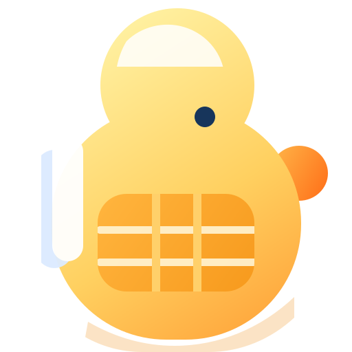

Shelf AI current icon direction
Current revision: remove the blue square background, keep only the duck body, and scale the subject up so it nearly fills the full icon bounds.

Current revision: remove the blue square background, keep only the duck body, and scale the subject up so it nearly fills the full icon bounds.
